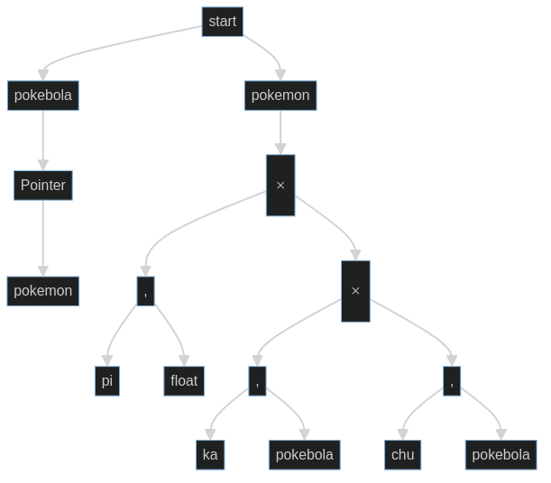

| Copyright | (c) Daniel Pinto 15-11139 |
|---|---|
| License | GPL-3 |
| Maintainer | 15-11139@usb.ve |
| Stability | experimental |
| Portability | POSIX |
| Safe Haskell | None |
Tarea3
Description
Synopsis
- pregunta1a :: String
- pregunta2 :: String
- getType :: E -> Types
- example :: E
- pregunta3a :: E -> Types
- pregunta3b :: [Rose (String, Types)]
- pregunta3d :: String
Documentation
pregunta1a :: String Source #
El grafo de tipos es el siguiente:

El esquema de verificacion es:
| Expresion | Tipo | Substitucion |
|---|---|---|
| \[cmap\] | \[\beta\] | |
| \[f\] | \[\gamma\] | |
| \[x\] | \[\rho\] | |
| \[[]\] | \[\forall a.list(a)\] | |
| \[null\] | \[\forall a.list(a) \rightarrow bool\] | |
| \[head\] | \[\forall a. list(a) \rightarrow a\] | |
| \[tail\] | \[\forall a. list(a) \rightarrow a\] | |
| \[if\] | \[\forall a. bool \times a \times a \rightarrow a\] | |
| \[concat\] | \[\forall a. list(a) \times list(a) \rightarrow list(a) \] | |
| \[match\] | \[\forall a. a \times a \rightarrow a\] | |
| \[cmap(f,x)\] | \[a_1\] | \[\beta = \gamma \rightarrow \rho \rightarrow a_1\] |
| \[head(x)\] | \[a_2\] | \[\rho = list(a_2)\] |
| \[tail(x)\] | \[list(a_2)\] | |
| \[cmap(f,tail(x))\] | \[a_1\] | |
| \[f(head(x))\] | \[a_3\] | \[\gamma = a_2 \rightarrow a_3\] |
| \[concat(f(head(x)),cmap(f,tail(x)))\] | \[list(a_4)\] | \[a_3 = list(a_4), a_1 = list(a_4) \] |
| \[null(x)\] | \[bool\] | |
| \[if(null(x),[],concat(f(head(x)),cmap(f,tail(x))))\] | \[list(a_4)\] | |
| \[match(cmap(f,x), if(null(x),[],concat(f(head(x)),cmap(f,tail(x)))))\] | \[list(a_4)\] |
Es decir: \[\begin{aligned} \beta &= \gamma \rightarrow \rho \rightarrow a_1 \\ &= (a_2 \rightarrow a_3)\rightarrow list(a_2) \rightarrow a_1 \\ &= (a_2 \rightarrow list(a_4))\rightarrow list(a_2) \rightarrow list(a_4) \\ &= \forall a_2\ a_4. (a_2 \rightarrow list(a_4))\rightarrow list(a_2) \rightarrow list(a_4) \end{aligned} \]
El cual es el tipo mas general de \[concatMap\]
pregunta3a :: E -> Types Source #
La funcion getType obtiene el tipo de una expresion usando solo atributos sintetizados. Vea el
- source para la implementacion.
pregunta3b :: [Rose (String, Types)] Source #
El tipo de la frase, y como se obtiene, se puede ver en los siguientes arboles:

pregunta3d :: String Source #
La pregunta 3.a planteada como regla de inferencia:
G |- e0 : Int G |- e1 : Int
-----------------------------
G |- e0 + e1 : Int
G |- e0 : Bool G |- e1 : Bool
-----------------------------
G |- e0 ^ e1 : Bool
G |- e0 : Int G |- e1 : Int
-----------------------------
G |- e0 < e1 : Bool
G |- e0 : T T /= Null
-----------------------------
G |- e0 ?: e1 : T
G |- e0 : Null G |- e1 : T
-----------------------------
G |- e0 ?: e1 : T
G |- e0 : T T /= Null
-----------------------------
G |- e0!! : T
G |- e0 : Null
-----------------------------
G |- e0!! : Bottom
G |- e : T
-------------
G |- (e) : T
---------------
G |- num : Int
-----------------
G |- true : Bool
-----------------
G |- false : Bool
-----------------
G |- null : Null